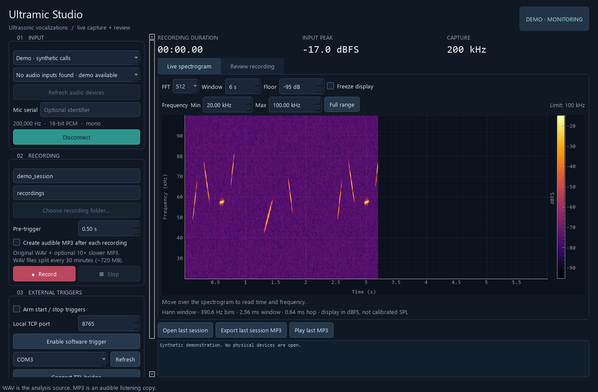

This folder contains editable source. Install 64-bit Python 3.12 and the dependencies before launching.
Setup_Windows.cmd.Start_Ultramic_Studio.cmd. Choose the synthetic demo or your microphone input.Start_Ultramic_Studio.cmd --demo
The microphone identifier is optional and blank by default. WAV contains the original 200 kHz PCM; the optional 10× time-expanded MP3 is a listening copy.

For the combined camera recorder, open the camera setup guide. Read README and detailed setup for dependencies and hardware.
Original source: MIT license. Dependencies retain their own terms.